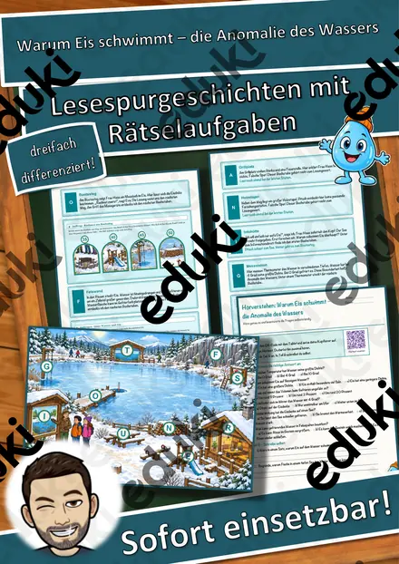
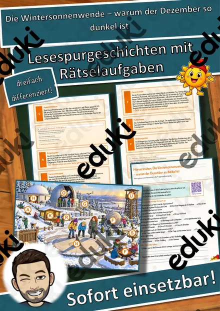
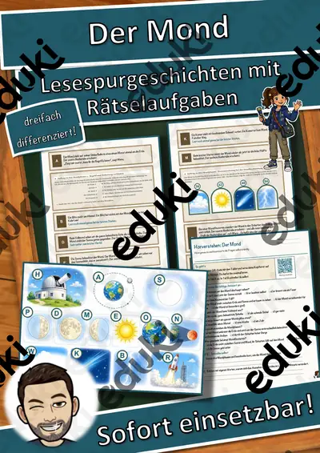
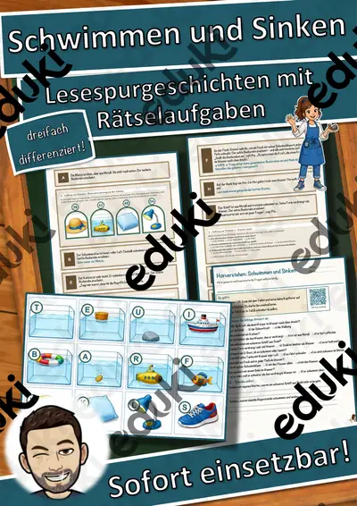
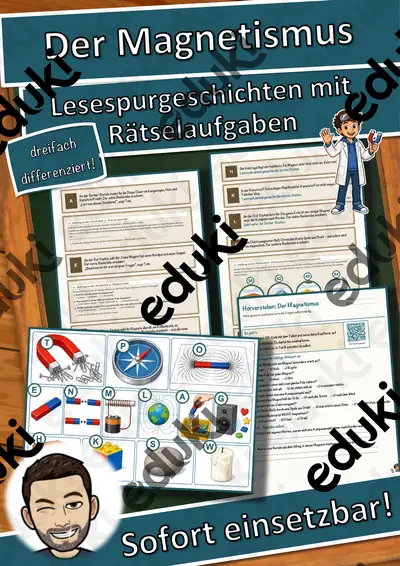
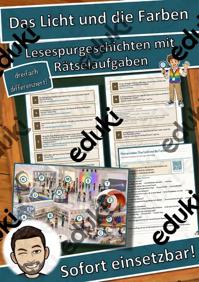
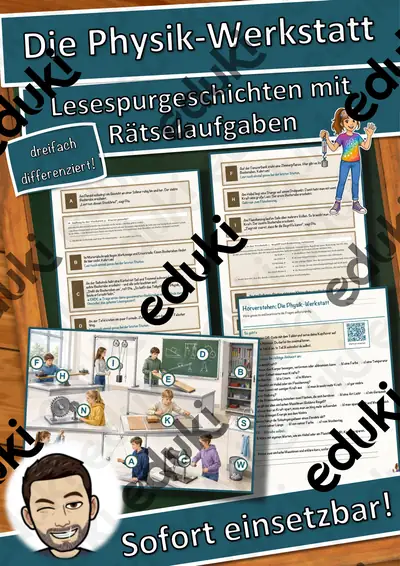

Der Stromkreis – Lesespurgeschichte mit Rätselaufgaben (Klasse 7)
Begib dich mit deiner Klasse auf eine spannende Lesespur durch eine Strom-Werkstatt! Die Kinder begleiten Lena und Jonas und den Elektro-Lehrling Timo – von der Stromquelle über Kabel, Glühlampe, Steckdose, Reihenschaltung und Parallelschaltung bis zum Elektromotor und zur Klingel – und lernen dabei ganz nebenbei, wie ein Stromkreis funktioniert. Am Ende jedes Abschnitts verrät ein Hinweis den nächsten Ort auf dem Werkstattplan – nur wer richtig liest und mitdenkt, findet den Weg und sammelt alle geheimen Buchstaben zum Lösungswort.
Diese Lesespurgeschichte verbindet motivierendes, sinnentnehmendes Lesen mit echter physikalischer Kompetenz (Elektrizitätslehre) und schult zugleich das genaue Arbeiten. Das Material ist SOFORT EINSETZBAR und in DREI DIFFERENZIERUNGSSTUFEN (leicht ★ / mittel ★★ / schwer ★★★) angelegt, sodass alle Kinder einer Klasse am selben Thema arbeiten können.WICHTIG: Das komplette Material ist sowohl in FARBE als auch in SCHWARZ-WEISS enthalten – ideal zum Sparen von Druckkosten.DAS IST ENTHALTEN
- Lesespurgeschichte in 3 Niveaus (leicht, mittel, schwer)
- farbiger Werkstattplan als Suchkarte
- Hörverstehen mit QR-Code zur MP3 (Kinder hören selbstständig mit Kopfhörern)
- vier Aufträge auf dem Weg: ein Verbinde-Rätsel, ein Strom-Quiz, eine Prozent-Rechenaufgabe und ein Steckbrief
- Rätselseite (Wörter-Suchsel + Wissensfragen)
- Ausmalbild zum Thema (einfacher Stromkreis)
- ausführliches Lösungsblatt für die Lehrkraft
- alles zusätzlich als komplette Schwarz-Weiß-VarianteSO FUNKTIONIERT DIE LESESPURDie Kinder lesen ab START, entnehmen dem Text einen Hinweis auf einen Ort, suchen ihn auf dem Plan und lesen beim dort abgebildeten Buchstaben weiter. Eingebaute Sackgassen dienen der Selbstkontrolle. Am Ende werden die gesammelten Buchstaben umgestellt und ergeben ein geheimes Lösungswort. (Die Lösungen sind selbstverständlich nur im Lösungsblatt für die Lehrkraft enthalten.)INHALTLICHER SCHWERPUNKTGrundlagen der Elektrizität: die Stromquelle, Leiter und Isolatoren, Verbraucher, der geschlossene Stromkreis und der Schalter, die Reihen- und die Parallelschaltung, der Elektromotor und die Klingel sowie der sichere Umgang mit elektrischem Strom. Das Material stellt die Zusammenhänge sachlich und faktenbasiert dar und macht den Stromkreis anschaulich erfahrbar.ABGEDECKTER LEHRPLAN (Klasse 7)
- Physik: Elektrizitätslehre – Stromquelle, elektrischer Leiter und Isolator, Verbraucher, geschlossener und offener Stromkreis, Schalter, Reihen- und Parallelschaltung, Wirkungen des elektrischen Stroms (Licht, Wärme, Bewegung, Magnetismus), sicherer Umgang mit Strom.
- Deutsch – Lesen mit Texten und Medien umgehen: Lesestrategien anwenden, Texten gezielt Informationen entnehmen, sinnentnehmend und selektiv lesen; Selbstkontrolle und Lesemotivation durch die Lesespur; Zuhören: einem Sachhörtext konzentriert folgen und Wesentliches entnehmen (Hörverstehen mit MP3).
- Mathematik – Prozentrechnung im Sachzusammenhang, Prozentwert berechnen und Ergebnisse deuten.
- Fächerübergreifend / Kompetenzen: naturwissenschaftliches Denken, technisches Verständnis, Sicherheitsbewusstsein, selbstständiges Arbeiten, genaues Lesen und Prüfen, Konzentration und Ausdauer, kreatives Gestalten (Ausmalbild).
Geeignet für Freiarbeit, Stationenlernen, Vertretungsstunden, Wochenplan und Homeschooling. Klassenstufe 7 (differenziert einsetzbar auch in angrenzenden Jahrgangsstufen).
Ähnliche Materialien

Warum Eis schwimmt – die Anomalie des Wassers – Lesespurgeschichte mit Rätselaufgaben (Klasse 7)

Die Wintersonnenwende – warum der Dezember so dunkel ist – Lesespurgeschichte mit Rätselaufgaben (Klasse 7)

Der Mond – Lesespurgeschichte mit Rätselaufgaben (Klasse 7)

Schwimmen und Sinken – Lesespurgeschichte mit Rätselaufgaben (Klasse 7)

Der Magnetismus – Lesespurgeschichte mit Rätselaufgaben (Klasse 7)

Das Licht und die Farben – Lesespurgeschichte mit Rätselaufgaben (Klasse 7)

Die Physik-Werkstatt – Lesespurgeschichte mit Rätselaufgaben (Klasse 7)